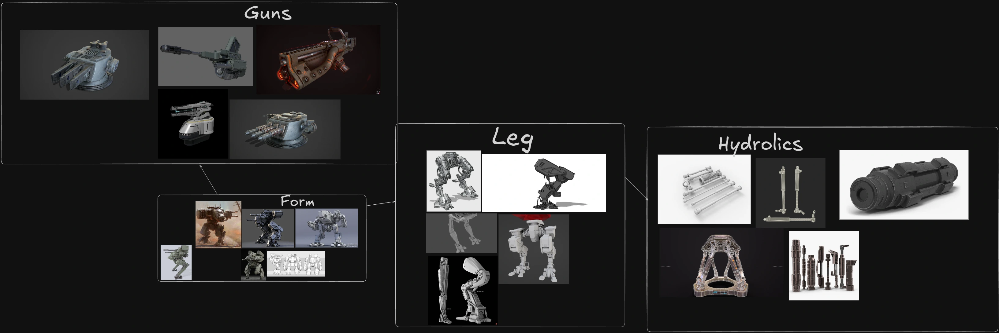
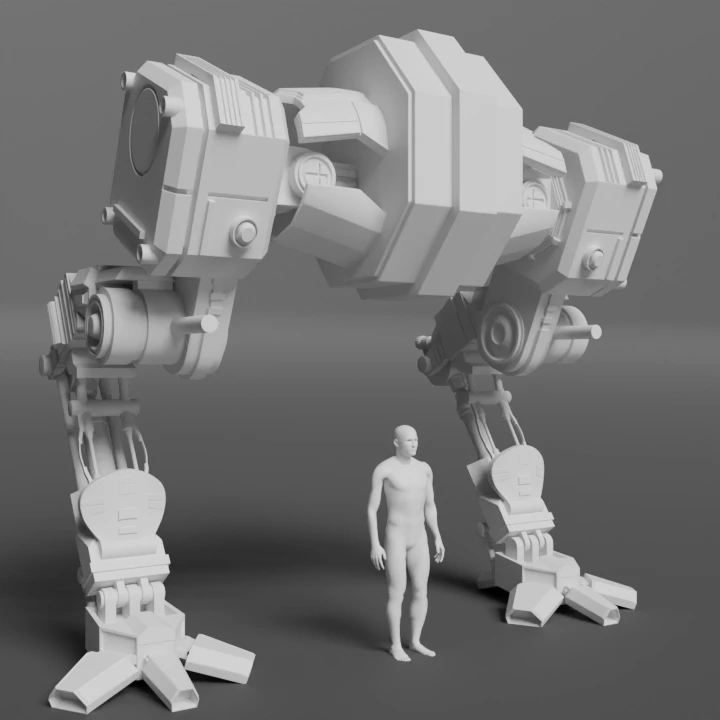
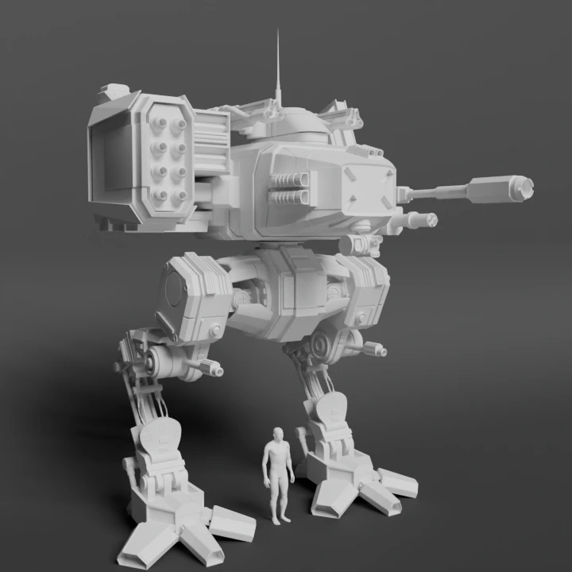
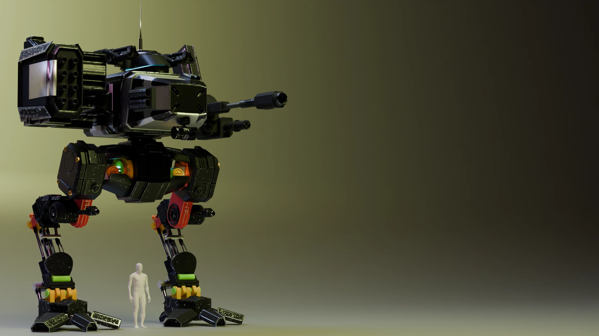
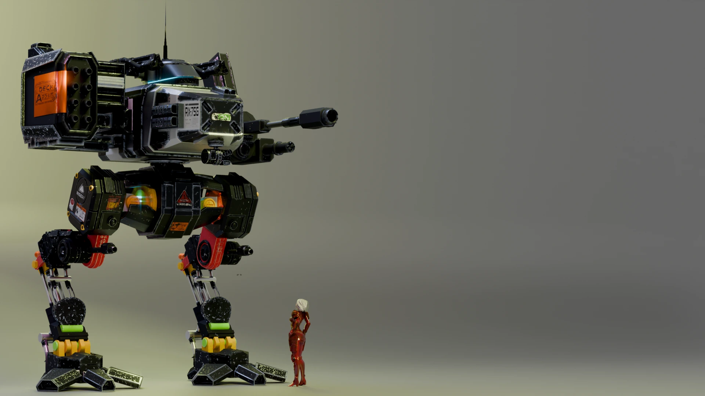
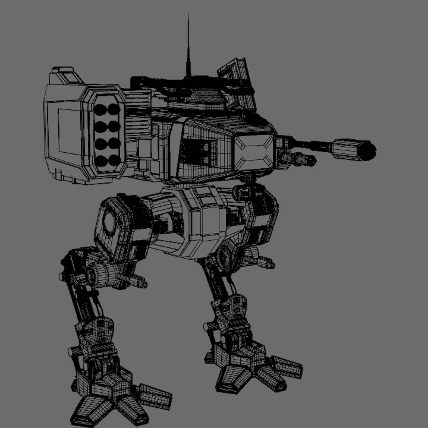
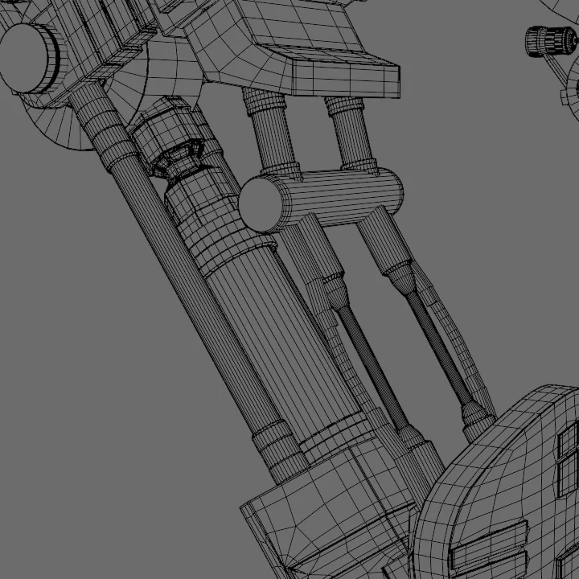
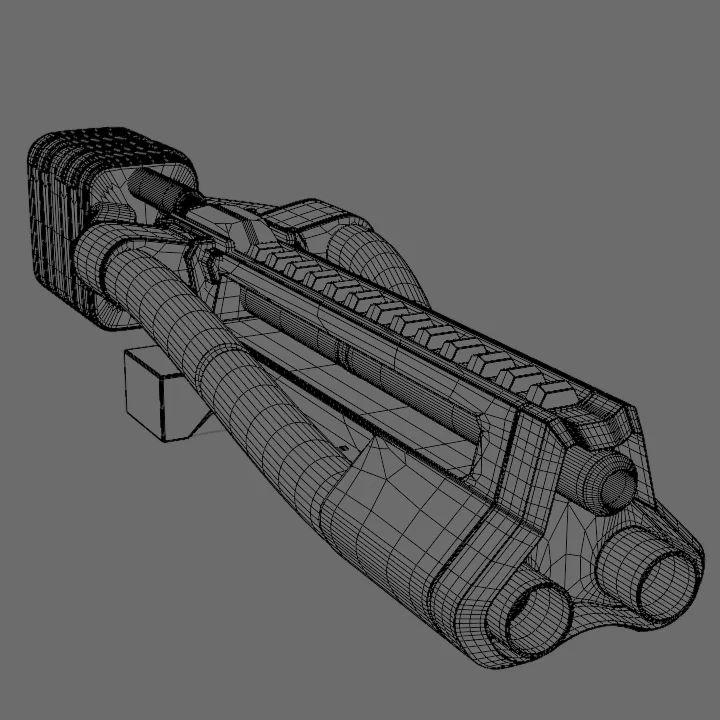
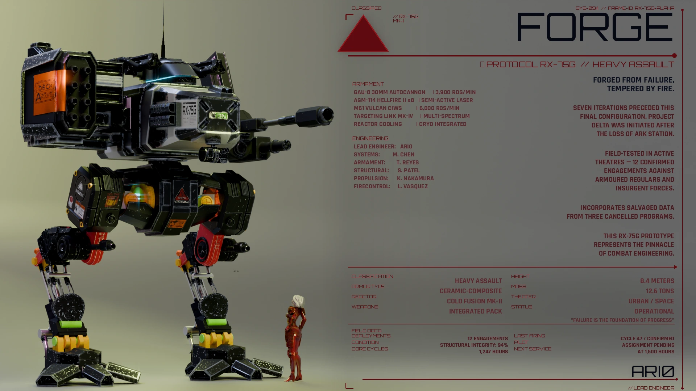

Introduction
I've dabbled around a bit with mech modelling, trying to play around with mechanical joints and believable movement logic. My first attempt at this was fairly workable — a decent design — but I ended up using very few references and not focusing enough on the joint mechanics. Instead, I went ahead to focus purely on form.
For this redesign, the goal was simple: create a pretty form with proper topology and focus on proper joint logic. I wanted the final result to look like it could actually function, not just look cool in a still render.
Concept Phase
Before diving into Blender, I put together a concept board to nail down the silhouette and mechanical language. I wanted something that felt grounded — industrial, angular, with clear separation between armor plates.

Early Blockouts — First Test
The first pass was rough. I focused on getting the proportions right and experimenting with the leg structure. The joint placement needed to look like it could actually support weight and translate motion.


The first test was blocky and the proportions were still being figured out. The second test shows slightly more refinement — the legs started reading better as mechanical limbs rather than abstract shapes.
Progression — Mid-Point Render
By the third render, the silhouette was mostly locked in. I had started adding more detail to the torso and refining the joint connections. The arms and shoulder assembly went through several iterations before landing on something that felt balanced.

This stage was all about refining topology and making sure the hard-surface edges were clean. I spent a lot of time on the bevel workflow and making sure the form held up from every angle.
Pre-Final Polish
Before the final render, I did a pre-final pass to check materials, lighting, and surface imperfections. This is where the mech started feeling real — the materials gave the model weight, and the lighting brought out the forms.

I adjusted the roughness on the armor panels, added some subtle wear in the joints, and tweaked the rim lights to separate the silhouette from the background more clearly.
Topology & Wireframe
Before I added materials and lighting I wanted to make sure the wireframe was clean and the edge flow actually supported the mechanical forms. First image is a full-body wireframe, then a couple close-ups of the joints and surface detail.



Final Render
The final render brings everything together. The topology is clean, the joints read as functional, and the overall form is cohesive. Compared to my earlier mech work, this feels like a real step forward — both in terms of technical execution and design maturity.
